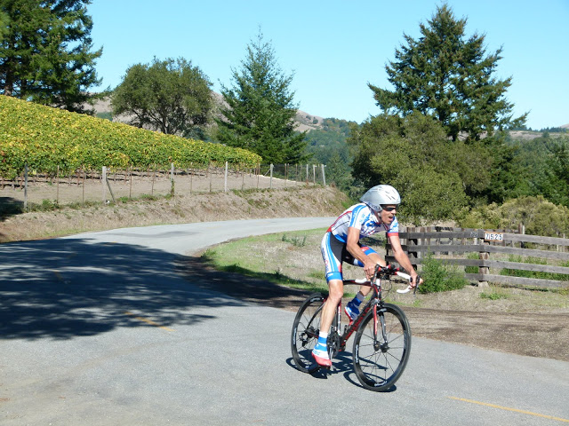

|
 |
 |
|  |
| Clark Foy had everything dialed in for this week's ride (Luther Pugh) |
It was another week of perfect Low-Key weather as Low-Key tackled its second of two individual time trials in the 2012 series.
In the women's division, it's been all about Lisa Penzel this year as she continued per perfect record of top placings. She was once again followed by fellow Brown-Zoner Lynn Sestak. Amy Cameron of Sisters was third in this 16-rider-strong women's field, just 10 seconds ahead of Ginger Kroft.
In the men's division, it's been an incredible series this year, as Clark Foy asserted control to move into the overall lead. Low-Key stars Tracy Colwell and Carl Nielson were second and third ahead of last week's time trial winner, Rob Manchester and just behind him, last week's coordinator Rich Brown.
In the tandem division, the strong turnout this year continued, with the Pauls once again blitzing the course to take the top points against mixed tandem teams the Brehmers and the Van Kaenels. The Pauls are the strongest all-male tandem team in Low-Key history.
In the Hybrid-Electric division, Bill Bushnell took the convincing win, although his score was a bit lower than it had been in recent climbs.
Special thanks to our amazing volunteer crew on this very challenging course!
Strava T-shirt qualifiers indicated with orange background. Note riders can only qualify once per series, so may not be listed even if they beat the target time for this week.
| pl | # | name | team | cat | time | mph | fph | score |
|---|---|---|---|---|---|---|---|---|
| 1 | 129 | Lisa Penzel | The Brown Zone | 45+ | 63:12 | 14.15 | 2278 | 126.78 |
| 2 | 146 | Lynn Sestak | The Brown Zone | 50+ | 66:59 | 13.35 | 2150 | 118.58 |
| 3 | 305 | Amy Cameron | Sr's & Mr's of No Mercy | 30+ | 67:01 | 13.34 | 2149 | 118.52 |
| 4 | 113 | Ginger Kroft | Western Wheelers | 40+ | 67:11 | 13.31 | 2143 | 118.18 |
| 5 | 8 | Janet Martinez | Sr's & Mr's of No Mercy | 69:17 | 12.90 | 2078 | 114.07 | |
| 6 | 215 | Laura Hipp | Western Wheelers | 4 | 69:30 | 12.86 | 2072 | 113.66 |
| 7 | 500 | Mary Ellen Allen | Sr's & Mr's of No Mercy | 45+++ | 71:55 | 12.43 | 2002 | 109.28W |
| 8 | 79 | Lisa Emmerich | Sr's & Mr's of No Mercy | 50+ | 73:32 | 12.16 | 1958 | 106.52 |
| 9 | 408 | Julie Colwell | Team Colwell | 40+ | 75:14 | 11.88 | 1914 | 103.76 |
| 10 | 422 | Sandra King | Team Fremont FFBC p/b Chipotle | 40+ | 75:24 | 11.86 | 1910 | 103.50 |
| 11 | 404 | Sugar Brown | The Brown Zone | Brown | 78:27 | 11.40 | 1836 | 98.88 |
| 12 | 91 | Hannah Hausman | Hausbert | 20+ | 81:32 | 10.96 | 1766 | 94.60 |
| 13 | 514 | Magdalena Novotna | El Camino Tri Club | 40+ | 84:11 | 10.62 | 1711 | 91.18 |
| 14 | 50 | Alison Chaiken | Sr's & Mr's of No Mercy | 50+ | 87:34 | 10.21 | 1644 | 87.14 |
| 15 | 440 | Darlene Stevenson | 40+ | 90:31 | 9.88 | 1591 | 83.88 | |
| 16 | 312 | Andrea Ivan | Silicon Valley Triathlon | 93:37 | 9.55 | 1538 | 80.70 | |
| 17 | 423 | Nina Komlik | 45+ | 116:27 | 7.68 | 1237 | 62.79 |
reference time for division Women = 77:41
| pl | # | name | team | cat | time | mph | fph | score |
|---|---|---|---|---|---|---|---|---|
| 1 | 212 | Clark Foy | Western Wheelers | 45+ | 53:19 | 16.77 | 2701 | 124.26 |
| 2 | 64 | Tracy Colwell | Team Colwell | 40+ | 53:42 | 16.65 | 2682 | 123.24 |
| 3 | 230 | Carl Nielson | Sr's & Mr's of No Mercy | 50+ | 54:15 | 16.48 | 2654 | 121.80 |
| 4 | 120 | Rob Manchester | 35+ | 54:48 | 16.31 | 2628 | 120.40 | |
| 5 | 38 | Rich Brown | The Brown Zone | 35+ | 54:56 | 16.27 | 2621 | 120.06 |
| 6 | 438 | Kieran Sherlock | Western Wheelers | 45+ | 55:27 | 16.12 | 2597 | 118.78 |
| 7 | 56 | Tim Clark | Low-Key | 45+ | 55:42 | 16.05 | 2585 | 118.17 |
| 8 | 59 | David Collet | 40+ | 55:54 | 15.99 | 2576 | 117.68 | |
| 9 | 213 | Chris Furgiuele | Dolce Vita Cycling | 35+ | 56:04 | 15.95 | 2568 | 117.28 |
| 10 | 95 | Jared Hudson | SquadraSF | 30+ | 56:18 | 15.88 | 2558 | 116.72 |
| 11 | 172 | Morgan Raines | Bike Trip/Symantec | 40+ | 56:22 | 15.86 | 2555 | 116.56 |
| 12 | 517 | Kevin Susco | Webcor/Alto Velo | 50+ | 56:27 | 15.84 | 2551 | 116.36 |
| 13 | 149 | Daryl Spano | San Jose Bike Club | 45+ | 56:30 | 15.82 | 2549 | 116.24 |
| 14 | 7 | James Porter | Western Wheelers | 3 | 57:01 | 15.68 | 2526 | 115.03 |
| 14 | 92 | Rich Hill | LGBRC | 45+ | 57:01 | 15.68 | 2526 | 115.03 |
| 16 | 44 | Ciaran Byrne | Sr's & Mr's of No Mercy | 40+ | 57:02 | 15.68 | 2525 | 114.99 |
| 17 | 71 | Robby Cuthbert | Hausbert | 20+ | 57:08 | 15.65 | 2520 | 114.76 |
| 18 | 319 | Brian Schuster | Dolce Vita Cycling | 25+ | 57:26 | 15.57 | 2507 | 114.07 |
| 19 | 239 | Dennis Van Hoof | Type 1 Diabetes | 35+ | 58:12 | 15.36 | 2474 | 112.35 |
| 20 | 443 | H Two Brown | The Brown Zone | 50- | 58:21 | 15.32 | 2468 | 112.02 |
| 21 | 509 | Kevin Keenan | Sr's & Mr's of No Mercy | 55+ | 58:56 | 15.17 | 2443 | 110.74 |
| 22 | 421 | Mark King | IC3 Hammer Nutrition | 45+ | 59:05 | 15.13 | 2437 | 110.42 |
| 23 | 412 | Rob Easley | Sr's & Mr's of No Mercy | 45+ | 59:23 | 15.05 | 2425 | 109.78 |
| 24 | 502 | Jamy Bacchus | Berkeley Bike Club | 40+ | 59:29 | 15.03 | 2421 | 109.57 |
| 25 | 303 | Bill Brier | Team Fremont FFBC p/b Chipotle | 50+ | 60:13 | 14.85 | 2391 | 108.03 |
| 26 | 231 | Travis Retzer | Eden Bicycles | 4 | 60:28 | 14.79 | 2381 | 107.52 |
| 27 | 518 | Murray Swanson | Pen Velo/Pomodoro | 45+ | 60:39 | 14.74 | 2374 | 107.15 |
| 28 | 600 | Marcus Gosling | Webcor/Alto Velo | 3 | 60:58 | 14.66 | 2362 | 106.51 |
| 29 | 515 | Martin Pieprzyk | 61:35 | 14.52 | 2338 | 105.28 | ||
| 30 | 503 | Oliver R. Barajas | Eden Bicycles | Junior | 61:55 | 14.44 | 2326 | 104.63 |
| 31 | 78 | Bill Dvorak | 55+ | 62:00 | 14.42 | 2323 | 104.47 | |
| 32 | 145 | Takanobu Seimiya | Nikon Cycling Club | 40+ | 62:01 | 14.42 | 2322 | 104.44 |
| 33 | 511 | Jay Kilby | Elkhorn Creek Racing | 45+ | 62:03 | 14.41 | 2321 | 104.37 |
| 34 | 73 | J.D. Daniels | Eden Bicycles | 35+ | 62:13 | 14.37 | 2314 | 104.05 |
| 35 | 315 | Chris Mickelsen | 55+ | 62:40 | 14.27 | 2298 | 103.19 | |
| 36 | 525 | John Novitsky | 50+ | 62:41 | 14.26 | 2297 | 103.16 | |
| 37 | 80 | Joe Fant | The Brown Zone | 50+ | 63:05 | 14.17 | 2283 | 102.41 |
| 38 | 410 | Bryn Dole | Blekko | 40+ | 63:33 | 14.07 | 2266 | 101.54 |
| 39 | 130 | Jim Perreira | 45+ | 63:43 | 14.03 | 2260 | 101.24 | |
| 40 | 243 | Eric Doelling | 50+ | 64:02 | 13.96 | 2249 | 100.66 | |
| 41 | 99 | Peter Ingram | Ind. | 55+ | 64:14 | 13.92 | 2242 | 100.30 |
| 42 | 516 | John Richardson | Webcor/Alto Velo | 60+ | 64:19 | 13.90 | 2239 | 100.15 |
| 43 | 450 | Brad Fox | LGBRC | 30+ | 64:41 | 13.82 | 2226 | 99.50 |
| 44 | 75 | Giles Douglas | 35+ | 64:57 | 13.76 | 2217 | 99.03 | |
| 45 | 161 | Alan Weatherall | San Jose Bike Club | 50+ | 65:32 | 13.64 | 2197 | 98.02 |
| 46 | 519 | Peter Tapscott | Webcor | 60+ | 66:00 | 13.55 | 2182 | 97.22 |
| 47 | 159 | Plamen Velikov | SLACer | 66:23 | 13.47 | 2169 | 96.58 | |
| 48 | 428 | Russ McCrary | Sr's & Mr's of No Mercy | 50+ | 66:55 | 13.36 | 2152 | 95.69 |
| 49 | 81 | Rick Ferrell | Bike Trip/Symantec | 50+ | 67:03 | 13.33 | 2148 | 95.47 |
| 50 | 510 | Jonas Kellner | 35+ | 67:12 | 13.30 | 2143 | 95.23 | |
| 51 | 76 | Pierre Doussiere | My LowRacer and myself | 50+ | 68:46 | 13.00 | 2094 | 92.74 |
| 52 | 135 | Mihai R. | 30+ | 68:59 | 12.96 | 2087 | 92.40 | |
| 53 | 31 | George Bonanto | Clydesdale | 69:17 | 12.90 | 2078 | 91.94 | |
| 54 | 521 | Bob Truel | Blekko | 45+ | 69:18 | 12.90 | 2078 | 91.92 |
| 55 | 45 | Pat Callahan | Quadzilla Racing | 40+ | 69:36 | 12.84 | 2069 | 91.46 |
| 56 | 442 | Matt Wittmann | 25+ | 69:37 | 12.84 | 2068 | 91.44 | |
| 57 | 520 | Bruno Tourette | Palo Verde Velo | 35+ | 70:15 | 12.73 | 2050 | 90.49 |
| 58 | 83 | Dave Fitch | Pan y Agua | 70+ | 70:19 | 12.71 | 2048 | 90.39 |
| 59 | 401 | Nick Bellomo | Type 1 Diabetes | 30+ | 70:20 | 12.71 | 2047 | 90.37 |
| 60 | 508 | Tom K. | Palo Verde Velo | 45+ | 70:24 | 12.70 | 2045 | 90.27 |
| 61 | 505 | Mike Gregoire | Taleo Racing | 45+ | 70:55 | 12.61 | 2031 | 89.51 |
| 62 | 77 | Frank Drobot | Western Wheelers | 60+ | 70:56 | 12.60 | 2030 | 89.49 |
| 63 | 58 | Kevin Colagiovanni | Team DUD | 25+ | 71:05 | 12.58 | 2026 | 89.27 |
| 64 | 65 | Kevin Comerford | Sr's & Mr's of No Mercy | 30+ | 71:46 | 12.46 | 2007 | 88.30 |
| 65 | 160 | Greg Watson | Palo Verde Velo | 45+ | 72:18 | 12.37 | 1992 | 87.55 |
| 66 | 417 | Brian Haines | Taleo Racing | 35+ | 72:24 | 12.35 | 1989 | 87.41 |
| 67 | 84 | Stephen Fong | CyclePath Racing | 45+ | 72:34 | 12.32 | 1984 | 87.18 |
| 68 | 507 | Clay Heberly | 35+ | 73:11 | 12.22 | 1968 | 86.33 | |
| 69 | 405 | Steve Bursley | Team Wild Hare | 45+ | 73:22 | 12.19 | 1963 | 86.09 |
| 69 | 100 | Tim Irvine | LGBRC | 40+ | 73:22 | 12.19 | 1963 | 86.09 |
| 71 | 26 | Bernard Bell | 50+ | 74:45 | 11.96 | 1926 | 84.26 | |
| 72 | 141 | Nico Sallembien | Silicon Valley Triathlon | 35+ | 76:44 | 11.65 | 1877 | 81.76 |
| 73 | 437 | Eddie Santos | 25+ | 77:07 | 11.59 | 1867 | 81.29 | |
| 74 | 441 | Han Wen | GOM | 40+ | 77:47 | 11.49 | 1851 | 80.49 |
| 75 | 225 | Thomas Maslen | Western Wheelers | 50+ | 82:32 | 10.83 | 1745 | 75.19 |
| 76 | 522 | Luis Valente | Palo Verde Velo | 50+ | 83:03 | 10.76 | 1734 | 74.65 |
| 77 | 523 | Frank Viggiano | Palo Verde Velo | 55+ | 83:04 | 10.76 | 1734 | 74.63 |
| 78 | 43 | Scott Byer | 45+ | 84:12 | 10.62 | 1710 | 73.48 | |
| 79 | 501 | Eric Anderson | 40+ | 87:30 | 10.22 | 1646 | 70.30 | |
| 80 | 148 | Gregory P. Smith | 35+ | 87:34 | 10.21 | 1644 | 70.24 | |
| 81 | 323 | Tim Sutton | Plus 3 | 50+ | 89:44 | 9.96 | 1605 | 68.29 |
| 82 | 524 | Jeff Weitzman | Palo Verde Velo | 45+ | 91:59 | 9.72 | 1566 | 66.38 |
| 83 | 513 | Rick Nolthenius | Santa Cruz Track Club | 55+ | 95:35 | 9.35 | 1507 | 63.51 |
| 84 | 63 | Skyler Colwell | Team Colwell | Junior | 107:20 | 8.33 | 1342 | 55.58 |
reference time for division Men = 64:24
| pl | # | name | team | cat | time | mph | fph | score |
|---|---|---|---|---|---|---|---|---|
| 1 | 429 | Paul McKenzie | Sr's & Mr's of No Mercy | 55+ | 60:12 | 14.85 | 2392 | 108.07 |
| 406 | Paul Chuck | Sr's & Mr's of No Mercy | 55+ | |||||
| 2 | 32 | Dan Brehmer | SLACer | 45+ | 71:39 | 12.48 | 2010 | 99.10 |
| 33 | Winnie Lam Brehmer | SLACer | Stoker | |||||
| 3 | 12 | Will von Kaenel | LGBRC | 50+ | 78:06 | 11.45 | 1844 | 89.75 |
| 13 | Lynn von Kaenel | LGBRC | Stoker |
| pl | # | name | team | cat | time | mph | fph | score |
|---|---|---|---|---|---|---|---|---|
| 1 | 6 | Bill Bushnell | Low-Key | It's Mostly The Bike | 37:50 | 23.63 | 3806 | 98.75 |
reference time for division Hybrid Electric = 37:25
| pl | team | score | riders |
|---|---|---|---|
| 1 | The Brown Zone | 365.43 | Rich Brown, H Two Brown, Joe Fant, Lisa Penzel, Lynn Sestak, Sugar Brown |
| 2 | Western Wheelers | 361.21 | Clark Foy, Kieran Sherlock, James Porter, Ginger Kroft, Laura Hipp, Frank Drobot, Thomas Maslen |
| 3 | Sr's & Mr's of No Mercy | 355.31 | Carl Nielson, Ciaran Byrne, Kevin Keenan, Rob Easley, Paul McKenzie, Paul Chuck, Russ McCrary, Amy Cameron, Janet Martinez, Kevin Comerford, Mary Ellen Allen, Lisa Emmerich, Alison Chaiken |
| 4 | Webcor/Alto Velo | 323.02 | Kevin Susco, Marcus Gosling, John Richardson |
| 5 | Eden Bicycles | 316.20 | Travis Retzer, Oliver R. Barajas, J.D. Daniels |
| 6 | LGBRC | 304.29 | Rich Hill, Brad Fox, Tim Irvine, Will von Kaenel, Lynn von Kaenel |
| 7 | SLACer | 294.79 | Plamen Velikov, Dan Brehmer, Winnie Lam Brehmer |
| 8 | 283.38 | Giles Douglas, Mihai R., George Bonanto, Scott Byer, Gregory P. Smith | |
| 9 | Team Colwell | 282.58 | Tracy Colwell, Julie Colwell, Skyler Colwell |
| 10 | Palo Verde Velo | 268.31 | Bruno Tourette, Tom K., Greg Watson, Luis Valente, Frank Viggiano, Jeff Weitzman |
| 11 | Dolce Vita Cycling | 231.35 | Chris Furgiuele, Brian Schuster |
| 12 | Low-Key | 216.92 | Bill Bushnell, Tim Clark |
| 13 | San Jose Bike Club | 214.26 | Daryl Spano, Alan Weatherall |
| 14 | Bike Trip/Symantec | 212.03 | Morgan Raines, Rick Ferrell |
| 15 | Team Fremont FFBC p/b Chipotle | 211.53 | Bill Brier, Sandra King |
| 16 | Hausbert | 209.36 | Robby Cuthbert, Hannah Hausman |
| 17 | Type 1 Diabetes | 202.72 | Dennis Van Hoof, Nick Bellomo |
| 18 | Blekko | 193.46 | Bryn Dole, Bob Truel |
| 19 | Taleo Racing | 176.92 | Mike Gregoire, Brian Haines |
| 20 | Silicon Valley Triathlon | 162.46 | Nico Sallembien, Andrea Ivan |
| 21 | SquadraSF | 116.72 | Jared Hudson |
| 22 | IC3 Hammer Nutrition | 110.42 | Mark King |
| 23 | Berkeley Bike Club | 109.57 | Jamy Bacchus |
| 24 | Pen Velo/Pomodoro | 107.15 | Murray Swanson |
| 25 | Nikon Cycling Club | 104.44 | Takanobu Seimiya |
| 26 | Elkhorn Creek Racing | 104.37 | Jay Kilby |
| 27 | Ind. | 100.30 | Peter Ingram |
| 28 | Webcor | 97.22 | Peter Tapscott |
| 29 | My LowRacer and myself | 92.74 | Pierre Doussiere |
| 30 | Quadzilla Racing | 91.46 | Pat Callahan |
| 31 | El Camino Tri Club | 91.18 | Magdalena Novotna |
| 32 | Pan y Agua | 90.39 | Dave Fitch |
| 33 | Team DUD | 89.27 | Kevin Colagiovanni |
| 34 | CyclePath Racing | 87.18 | Stephen Fong |
| 35 | Team Wild Hare | 86.09 | Steve Bursley |
| 36 | GOM | 80.49 | Han Wen |
| 37 | Plus 3 | 68.29 | Tim Sutton |
| 38 | Santa Cruz Track Club | 63.51 | Rick Nolthenius |